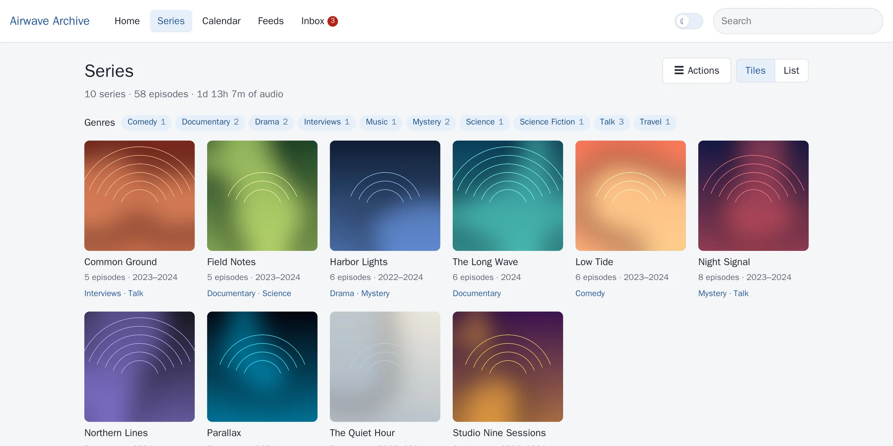
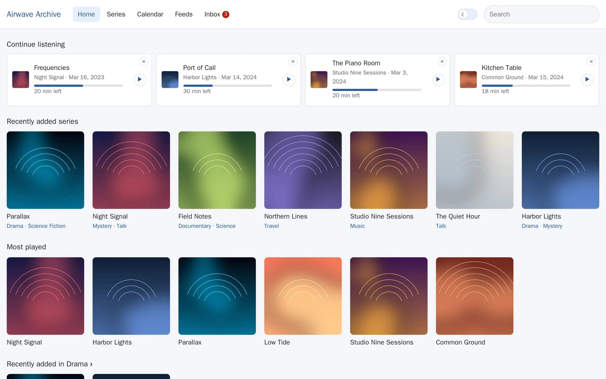
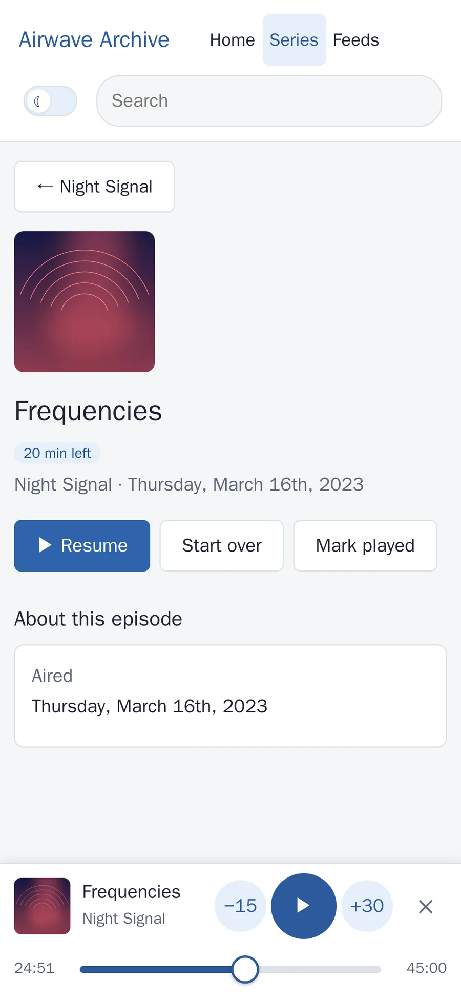
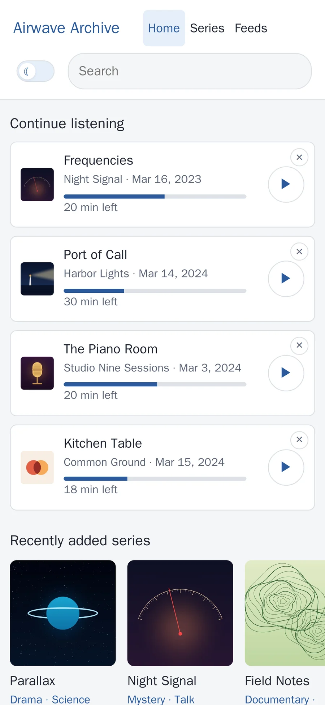
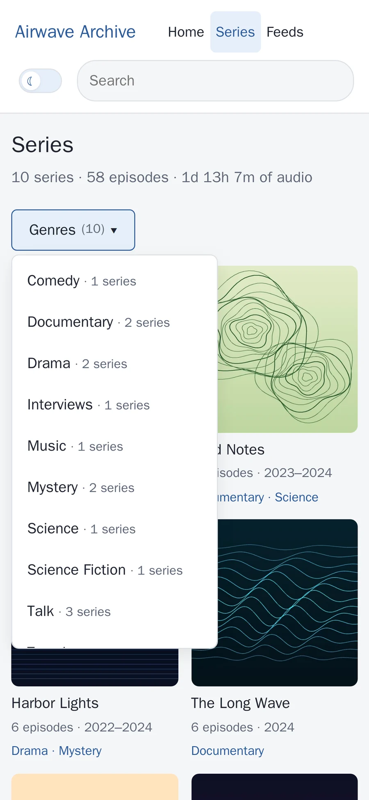
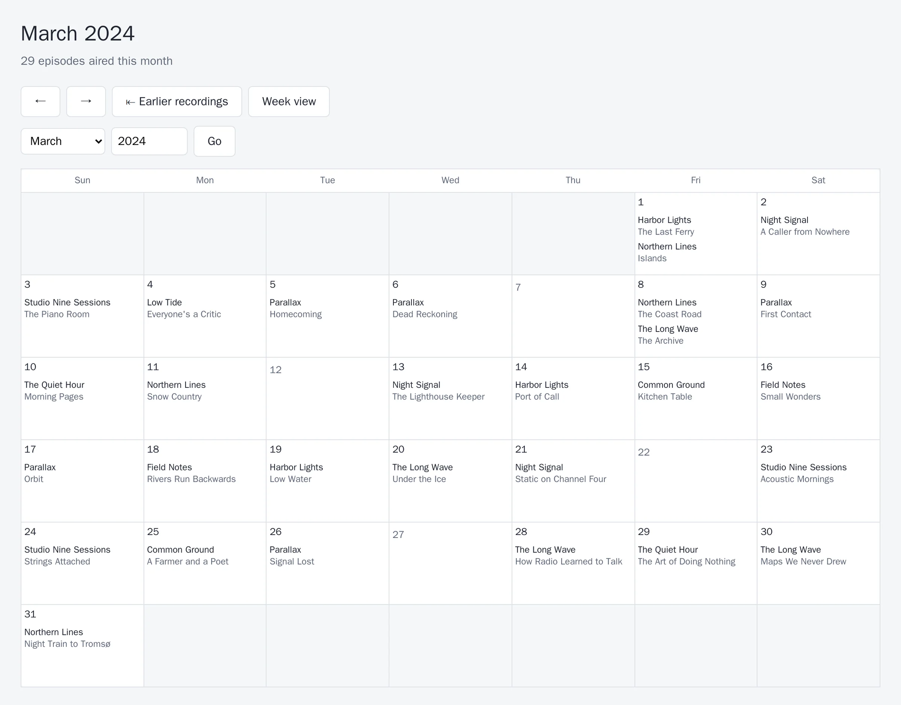
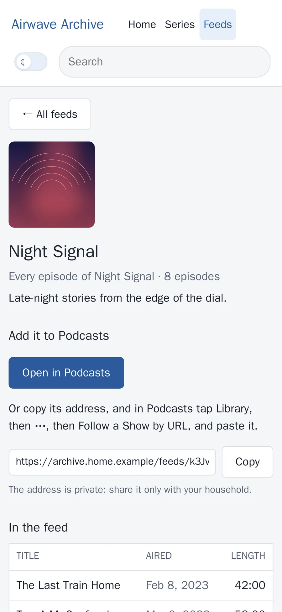
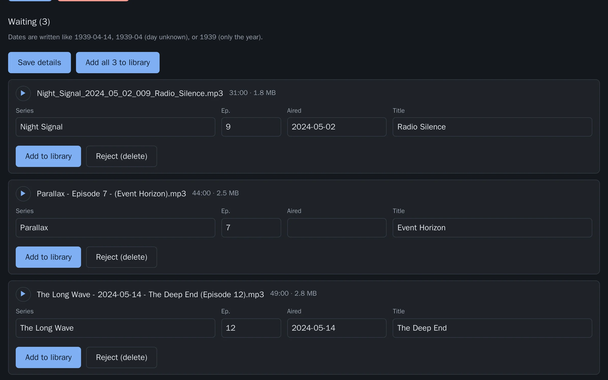

Every series, at a glance.
Your whole collection as a wall of artwork, with genres you choose yourself. Pick a series and its episodes are waiting, in the order they aired.

Airwave Archive
A calm, self-hosted home for your radio and podcast recordings. Simple on the surface. Powerful underneath.


Press play and lose yourself. Airwave Archive keeps your place, remembers what you've heard, and gets everything else out of the way.
Your whole collection as a wall of artwork, with genres you choose yourself. Pick a series and its episodes are waiting, in the order they aired.

Stop halfway on your computer, carry on from your phone. On a phone the tools stay home: just your library and a big play button.

Drama tonight? Something funny for the drive? Every genre has its own shelf.

A calendar of everything you have. See what aired one week, one month, one year, and wander from one episode to everything around it.

Turn any series into a private podcast feed. One tap adds it to Podcasts on your iPhone, and new episodes arrive on their own.

Thousands of files, messy names, odd formats. Airwave Archive quietly sorts them out, and never touches a file without asking first.

Drop recordings in. Series, dates, episode numbers and titles are read from tags and file names, and tidied for you.
Video files, RealAudio, WMA, Ogg, FLAC and more become files any player can play, using every spare core.
A broadcast split into hours plays as one episode, each part straight after the last.
Write details into your files, rename and organize them, or tidy hundreds at once. You see every change before anything happens.
Titles, series, cast, hosts and notes, found as you type, even in very large libraries.
Export any selection as a zip of tagged copies, with every detail, ready for another library.
Airwave Archive runs on your own server at home. Your recordings stay where they are, on your own disks.
Airwave Archive runs with Docker on a home server. The install guide walks you through every step.